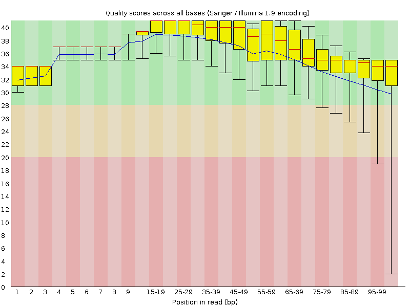
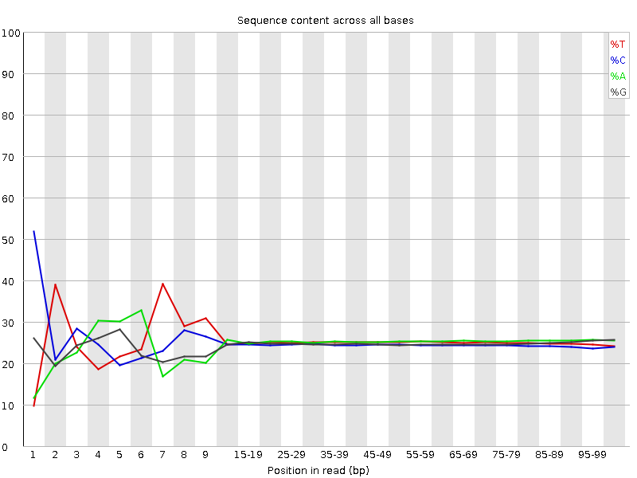
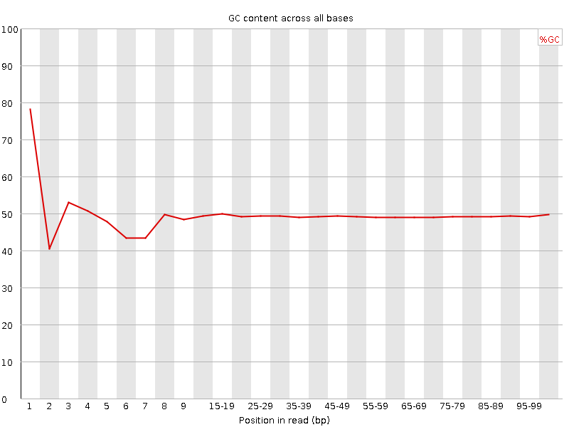
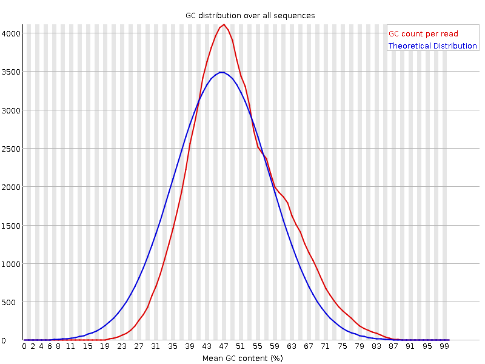
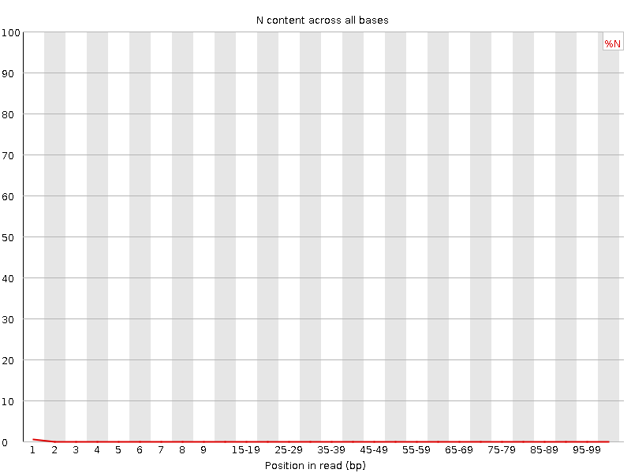
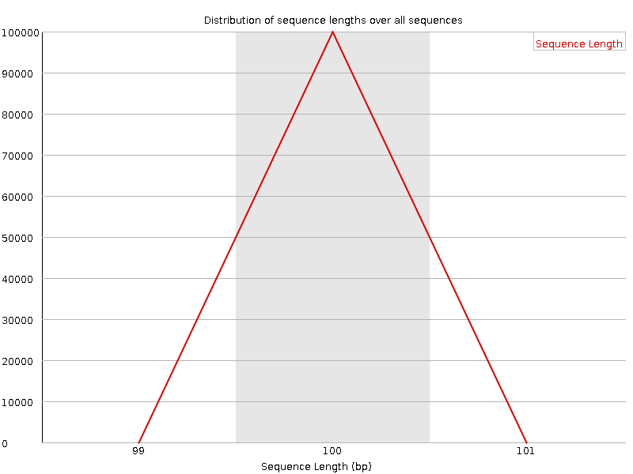
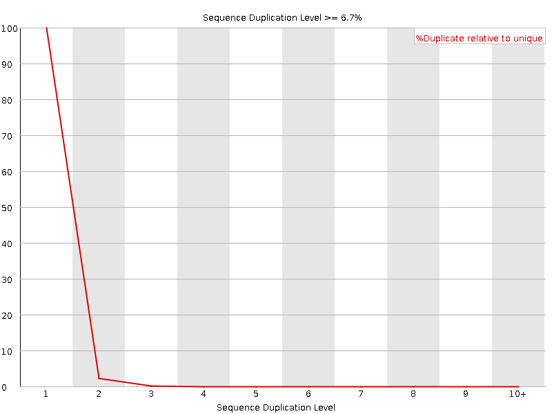
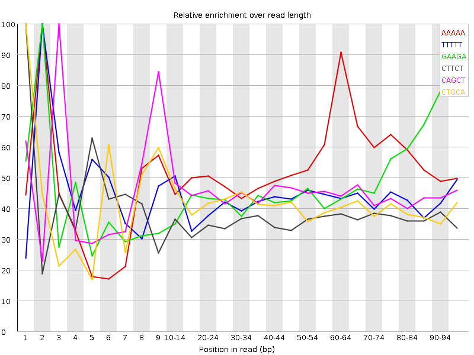

![[OK]](Icons/tick.png) Basic Statistics
Basic Statistics
| Measure | Value |
|---|---|
| Filename | female_repl1_R2.fq.gz |
| File type | Conventional base calls |
| Encoding | Sanger / Illumina 1.9 |
| Total Sequences | 100000 |
| Filtered Sequences | 0 |
| Sequence length | 100 |
| %GC | 49 |
Per base sequence quality

Per sequence quality scores

![[FAIL]](Icons/error.png) Per base sequence content
Per base sequence content

Per base GC content

![[WARN]](Icons/warning.png) Per sequence GC content
Per sequence GC content

Per base N content

Sequence Length Distribution

Sequence Duplication Levels

Overrepresented sequences
No overrepresented sequences
Kmer Content

| Sequence | Count | Obs/Exp Overall | Obs/Exp Max | Max Obs/Exp Position |
|---|---|---|---|---|
| AAAAA | 31635 | 3.2675908 | 6.052294 | 2 |
| TTTTT | 28735 | 2.9278564 | 6.8022676 | 2 |
| GAAGA | 25275 | 2.693369 | 5.578681 | 2 |
| CTTCT | 23425 | 2.463444 | 6.659581 | 1 |
| CAGCT | 22505 | 2.4170353 | 5.364604 | 3 |
| CTGCA | 21950 | 2.357428 | 5.762879 | 1 |
| AAGAA | 22165 | 2.3254125 | 5.139641 | 2 |
| CTCCT | 21735 | 2.3221214 | 7.798567 | 1 |
| CTTCA | 21005 | 2.2149808 | 7.544346 | 1 |
| CTCCA | 19460 | 2.0847423 | 8.544882 | 1 |
| CTGGA | 18125 | 1.9515352 | 7.338885 | 1 |
| CACAG | 17805 | 1.9174774 | 5.2580194 | 1 |
| CTCTG | 17655 | 1.8909822 | 5.4365277 | 1 |
| CTTCC | 17365 | 1.8552399 | 5.7843676 | 1 |
| CTTTT | 17665 | 1.828582 | 6.7553387 | 1 |
| CTGAA | 17045 | 1.8068535 | 7.4303036 | 1 |
| CTTTG | 16985 | 1.7907009 | 6.472526 | 1 |
| CTGGG | 14970 | 1.6371657 | 6.2911544 | 1 |
| CTGAG | 14855 | 1.5994513 | 5.3089805 | 1 |
| CTCAG | 14815 | 1.59113 | 7.7357574 | 1 |
| CTGGC | 14020 | 1.5294117 | 5.2733784 | 1 |
| GTTTT | 14330 | 1.4871043 | 5.7189026 | 1 |
| GGATG | 13505 | 1.4577646 | 5.132493 | 4 |
| CTCCC | 13215 | 1.4343485 | 5.036993 | 1 |
| CTCAT | 11485 | 1.2110953 | 5.7602105 | 1 |
| ATGCA | 10780 | 1.142733 | 5.1894627 | 6 |
| GATGC | 10580 | 1.1391582 | 5.0161495 | 5 |
| CTCAA | 10190 | 1.0774715 | 6.2870846 | 1 |